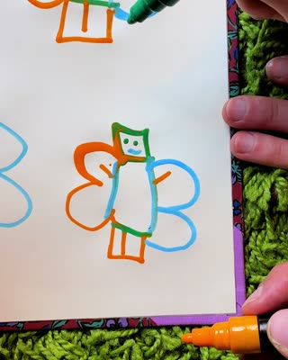
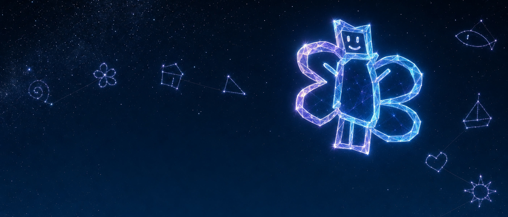
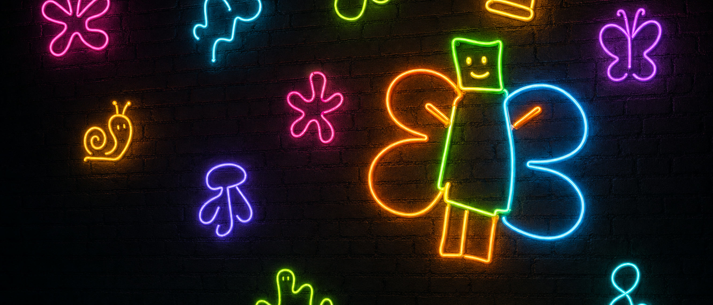

i'm a butterfly imab · Whistlegraph Dot Org · the dance track · 124 BPM · four on the floor
The club cousin of flutterbap. Built bottom-up from AC instruments and sung around one
hook. The source is Butterfly Cosplayer (2019), whistlegraph code imab,
138M views at mint. The minted code promises its holder the first edition and a royalty
split when this record ships. So this is the first release that has to honor that.
canonical whistlegraph · 0:19 · whistlegraph.org/imab · the graphic score


Whistlegraph Dot Org artist headers cut from imab · pop/artist/whistlegraph-dot-org/
01the hook
The melody is measured, not composed. Thirty-five performances of the song from @whistlegraph (2020–2026) were statistically skeletonised, then @jeffrey punched the definitive line into notepat on Aug 31. Where the stats and the singer disagree, the singer wins.
I'm a butterfly, flapping for you guys, just a costume, I put on, in my room.
# ground truth · notepat form · 2026-08-31 · h = the high C c g c c c · c h c c c · g f e d e e d c c c i'm(C4) a(G4) but-ter-fly(C4 C4 C4) flap(C4)-PING(C5) for you guys(C4 C4 C4) ← the one octave flare just(G4) a(F4) cos(E4)-tume(D4) ← the walk down, major third = MAJOR i(E4) put(E4) on(D4) · in my room(C4 C4 C4) ← home; "room" held longest # shape: a TONIC CHANT with one flare. source tempo ≈ 115 · the dance cut runs 124. # harmony implied by the chant: tonic drone · IV under "just a costume" · home. # dance-cut bed: Am | Am | G | G | C | C | F | G (8-bar loop), bass roots A2 A2 G2 G2 C3 C3 F2 G2.
melodyproof · does he sing what we wrote?
new · Sep 13out/melodyproof.htmlEvery syllable's sung pitch in every take, measured against this line. Two stages: the note-locked SET (proves the render) and the RAW stem (the verdict). Click a block to hear that syllable; ▶ melody plays the written notes on the take's timing. open the proof · one take: lead · 7427 · 7656
notepat melody proof
out/imab-melody-check.mp30:24The corrected line rendered as notes (holyvox notecheck, all targets hit). Listen to this before anything else.

02the six takes
Six TikTok performances pulled into the lane (17.4 s each, spectrogram strips from the syllawizard). 7311…070175 is the lead: its syllable boundaries were drawn by hand on Sep 9 and committed Sep 10 as the ground truth the aesthetivox chain reads. Two others have grid addresses in the vocal-set registry; all five non-leads stack as the choir at Y1. Each syllawizard link opens the interactive rectangle-drawing instrument for that take.
7311159624588070175
LEADboundaries drawn~/.cache/ac/imab/takes/0:17

syllawizard · processed-boundaries-7311159624588070175.json · set-fixes/7311159624588070175.json · lyric-overrides.json (@jeffrey's dictated retiming, Sep 3)


{kind=link}
takes review · the scrolling set video
Sep 9out/imab-takes-review.mp41:47Every placed vocal set in succession over the real floor mix, the lead's lyric ribbon underneath (setscroll / lyricscroll). Same audio as sets-successive below.
03the vocal chain, generation by generation
Every route we tried to get the hook sung, in order. Same 63 s accompaniment bed under most of them so they compare fairly. Raw takes never ship: everything here is aesthetivoxed. The arc goes TTS → WORLD resynthesis → chopped real words → one continuous real phrase → half-time sacred.
0 · the spoken source
Aug 31 08:30out/imab-hook-vocal.mp30:11The full lyric spoken by jeffrey's ElevenLabs voice via spinging say. Cached at hash c181725e2034d814; never re-spend the call. Whisper word sidecar alongside.

1 · hookvox
sing-hook.mjs0:16Sung derivative of the TTS: sliced, WORLD-snapped to the composed hook, transposed −12.

demo 1 · hookvox over the bed
sing-hook.mjs1:03
demo 2 · resing
resing.mjs1:03One continuous WORLD line through the full spinging engine on the measured melody: guided phoneme alignment, legato bridging, self-choir on vowels, reverb halo. Replaced the sliced route. The bare line is imab-line-vocal.mp3 (0:05).

demo 3 · voxcut
voxcut.mjs1:03First use of the real recordings: jeffrey's sung words sliced from a take by whisper timing, quantized to the 124 grid, then WORLD f0-replaced onto his own notes.

demo 5 · modelvox
modelvox.py1:03The averaged-Hz vocal model: the band tunes to jeffrey's measured pitch centres rather than the reverse.

demo 6 · sacredvox
the lawsacredvox.mjs1:03The vocal IS the original recording. Demucs-separated, kept as one continuous phrase, no WORLD, no slicing, one formant-preserving tempo-fit to 124, bed transposed to his key. Its ×6.00 gain law became the floor's cap. This is the posture the floor and hitbaker inherited.

demo 7 · coolvox, three takes
sacredvox plus the aesthetivox sheen: loner's autotune in NOTE mode, C major, strength 0.92 with scoop. One render per candidate take so the take itself could be chosen by ear.
…070175
lead1:03
…986079
1:03
…263646
1:03
demo 8 · holyvox
newest · Sep 11holyvox.mjsout/imab-vox-demo8.mp32:07The half-time sacred vocal: note-locked to the notepat truth and verified by notecheck, haloed on the vocal bus. This is the last thing rendered in the lane. It leads imabclub draft 1 and enters the floor at bar 30 as the tissue under the kickless break.

sets, successive
vocalset.mjsSep 8out/imab-sets-successive.mp31:47Every regulated vocal set from vocal-sets.json placed in a row on the floor: the lead on the pass doors, 7427… at J1, 7656… at Q1, the five-take choir at Y1 at half gain. Each sample tunes from its own measured base frequency.

the syllawizard spectrum
~/.cache/ac/imab/wizard-spec.pngThe 4529 × 520 spectrogram the wizard draws rectangles on, one band per syllable. Scroll it sideways.

04click · guide · accompaniment
For cutting real takes against. Record at 48 kHz with one ear in, drop files in
performances/, log every take in the manifest immediately. No human take has been
recorded yet: the manifest holds only the TTS source.
click 124
2:092-bar count-in then 64 bars. Beat 1 accented, brighter door tick at every 8-bar phrase start.

guide 124
2:09Same click with the hook melody on xylophone and the bass roots looping.

accompaniment
1:03The demo bed under every vox demo (gen-accomp.mjs). A ×3 variant sits beside it.

05the three spines
Three full arrangements exist and none has been chosen. Listen to them in the order they were made. The word-level vocal score is written against hitbaker, which makes it the de facto lead, but the decision is still yours.
A · imabclub draft 1
Aug 3196 bars · holyvox-ledout/imabclub-draft1.mp33:10Everything the first day learned in one arrangement: the note-locked half-time vocal, a sine choir assembling act by act, kick five four-on-the-floor with a kickless break, offbeat sub in C, eager hats and shaker, click-rush doors, a reversed-vocal riser into the drop. A click-overlaid print sits beside it for checking the grid. Review video generator: imabreview.mjs.

with click:
B · the floor, demo 1
Sep 572 bars · sacredvox palindromeout/imab-floor-demo1.mp32:22The clubber360 discipline applied: one grid, the floor assembles act by act, reduces to a shaker seed in the kickless break, returns whole at the drop, peels in reverse. Sacredvox placed whole at bars 16 / 40 / 56, holyvox as tissue from 30. Printed at −11.7 LUFS · LRA 13.3 · TP −1.6 via the cut-wax law: measure, one static dB, true-peak limit. Full bar map below.

C · hitbaker, demo 1
de facto leadSep 5104-bar chart formout/imab-hitbaker-demo1.mp31:32The chart-calibrated arrangement, single-study: cold open, verse / pre / chorus form with choruses at bars 24 / 56 / 76, a G-pedal break, terminal-lift finale. Jazz comp keys, bass chords, real CC0 Freesound drum kit, vocal bus with group and a butterfly choir, house master. Drives the word score (vocal-score.json: verse 1 is the Shatner monologue, every word its own event) and the pitch gate, which measures targets and iterates until they hit. Track video: preview-hitbaker.mjs. This render predates the Sep 10 boundaries, so it wants a re-bake.

06floor map · spine B
The palindrome from FLOOR-NOTES.md. Doors at 8, 16, 24, 32, 40, 48, 56, 64, 72 get click rushes;
breath rests floor the decoratives in the last half-bar before each door. Kick, sub, bass and both voices are never gated.
| bars | act | what plays |
|---|---|---|
| 0–4 | kick alone | kit kick four on the floor at 0.9 the whole record; one door tick at 0 |
| 4–8 | + closed hats | offbeat eighths |
| 8–12 | + open / shaker / sub | open-hat exhale every 2 bars, shaker 16ths (the seed that ticks through everything until 66), offbeat C1 tanh sub |
| 12–16 | + bass / sines | marimba bass roots soft, sine choir 3 voices |
| 16–24 | PASS 1 | sacredvox at the door (dry, ×6.00), bass full, vibraphone chords, wub on, reverse-bell into the door |
| 24–32 | lift | vox out; snare answers on odd bars, sines 4v, shaker gathering into 32 |
| 30–40 | holyvox | half-time tissue enters, 2-bar fade-in, haloed; its tail lands exactly at the drop door |
| 32–40 | KICKLESS BREAK | no kick / sub / bass / hats; sines 5v swelling, shaker alone; snare roll 36–40, reverse-kick, biggest click rush |
| 40–48 | DROP · PASS 2 | everything: sacredvox, sines 6v, vibes, open hats every offbeat, wub 0.17, side-fold inhale into 40 |
| 48–56 | peak | vox out; xylophone chant echo up an octave in C at 48 / 50 / 52 / 54; wub swells free |
| 56–64 | PASS 3 · farewell | sacredvox once more over the peel; vibes / xylo / snares gone at 56, sub + open + bass out at 60, sines fade 60–64 |
| 64–68 | peel | closed offbeats thinning, shaker out by 66 |
| 68–72 | kick alone | plus one last hit at 72, ringing into the fade |
Act RMS arc: −19.7 → −11.4 → −8.7…−9.2 → break −13.0 → PASS 3 −10.6 → peel −19.8. The palindrome holds.
07samples
Tap to audition. kit/ is sample-free, rendered from the AC engines (perc kit, bass-perc, xylophone hook notes, click ticks).
real/ is the CC0 Freesound drum kit hitbaker prefers, provenance in kit-real.json.
samples/real · CC0 Freesound
samples/kit · AC engines
08what we did
Twenty-eight commits, all on origin/main. blueberry is clean and level with the knot.
- Lane bootstrap plus the whistlegraph song-corpus statistical melody tools.
- The measured melody: a 35-take skeleton replaces the composed hook; then corrected to the notepat truth (cgccc · chccc · gfedeedccc).
- Averaged-Hz vocal model: the band tunes to jeffrey, not the reverse.
- holyvox: half-time sacred vocal, note-locked and verified. boundfix and timemap.
- imabclub draft 1, the lyricline proof video, grand piano accompaniment, cult-style score video with an events receipt.
- aesthetivox-alignment-video, the named scrutiny feature; SYNC_MS 50 measured on synccal.
- Hand boundary overrides (ping no longer swallows "for you"); syllabound, shapebound, syllawizard boundary instruments.
- hitbaker: the chart-calibrated arrangement bed; real CC0 drum kit; octaves down, bass chords, aesthetivox by default; cold open, jazz comp, vocal bus + group + butterfly choir, house master; no intro, playful keys, angels, textures.
- The word score: playable lyric placement, duration, harmony. Stretched butter / fly, other-take words, bassy kick thump.
- The pitch gate: measured targets, iterate until hit.
- preview-hitbaker track video on the shared preview primitives, synced to the cold-open form.
- Vocal sets: every sample tunes from its own base frequency, and the ribbon stops lying.
- floor.mjs: the 72-bar sacredvox palindrome, printed and measured (FLOOR-NOTES.md).
- The imab choir stacks at one address (Y1); lyricscroll draws choir blocks without ribbon.
- syllawizard run on all six takes (the six HTML instruments above), takes-review mp4.
- Boundaries drawn for the lead take and committed as ground truth, with the set-fixes overlay.
- holyvox pass → vox-demo8. Nothing since.
09what's open
machines
● blueberry: clean, level with origin/main. All demos here are on its disk.
● neo: unreachable Sep 13. Tailscale says offline since ~12:00 UTC; LAN pings answer slowly, SSH times out on both routes. Matches the pingable-but-unsshable memory-exhaustion state. Any uncommitted imab work there is unverified.
not started
● no human performance recorded (manifest holds only the TTS source)
● no cover, no canvas, no release bundle
● hitbaker not re-baked against the Sep 10 boundaries
the six questions from FLOOR-NOTES
- Three passes or two? PASS 3 at bar 56 sings the hook over the peel as a farewell. Drop it and the record empties out wordless from 56.
- The bar-12 step. The marimba bass arrives +8 dB even at 0.35. Stretch the assembly (bass at 12, chords at 14) or keep the two-stage door (harmony at 12, voice at 16)?
- Snare answers at 24–32 and 48–56 are the closest thing to a backbeat. clubber360 used rims. Keep, thin, or cut?
- Wub audibility at 0.17 under the drop with the follower pulling it under the voice. Worth a solo listen; may want +2 dB or a second harmonic.
- LRA 13.3 is wide for a juke print. Kick-alone acts could come up ~3 dB at the cost of the palindrome's hush.
- Which spine gets draft 2? imabclub (A, 96 bars, holyvox-led), the floor (B, 72 bars, sacredvox), or hitbaker (C, 104-bar chart, word score).
suggested next move
Pick C · hitbaker as the spine, answer the six questions, re-bake one fresh demo with the Sep 10 boundaries and the vox-demo8 holyvox tissue, and retire the two older spines to the archive. Then record a real take against the guide.